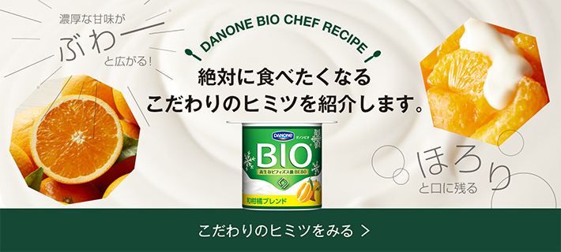

季節限定 国産 和柑橘ブレンド
「ビオの季節限定シリーズから新登場！国産の清見、温州みかん、はっさくの絶妙なブレンドに、ゆずの爽やかな香りをほんのり効かせた和柑橘ブレンド。
管理栄養士監修*による厳選果実が口に広がる濃厚な甘みに、酸味と苦味のアクセントが絶妙なバランスを生み出しました。濃厚な味と香りの冬の味わいをクリーミーなビオでお楽しみください。」
＊果実選定
-
- 大学卒業後、管理栄養士としてお客様の体を内側・外側の両面からサポート。その際に具体的な料理提案の必要性を感じ、和食やカフェの厨房にて約3年間の料理修行を行う。
その後、特定保健指導を経て独立。現在は、子供から大人まで家族みんながおいしく食べられて健康になれるよう、レシピ・商品開発や執筆など幅広く活動中。
